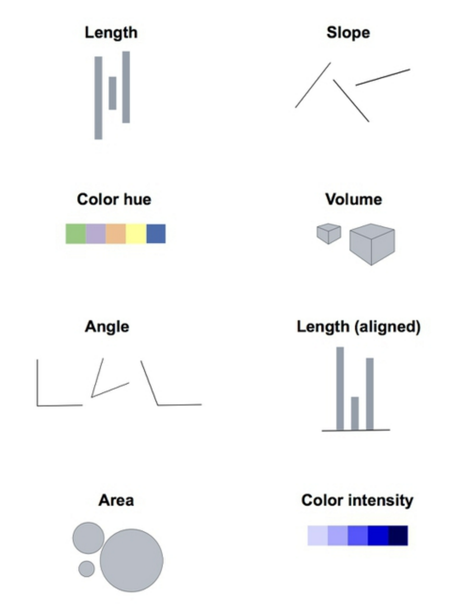
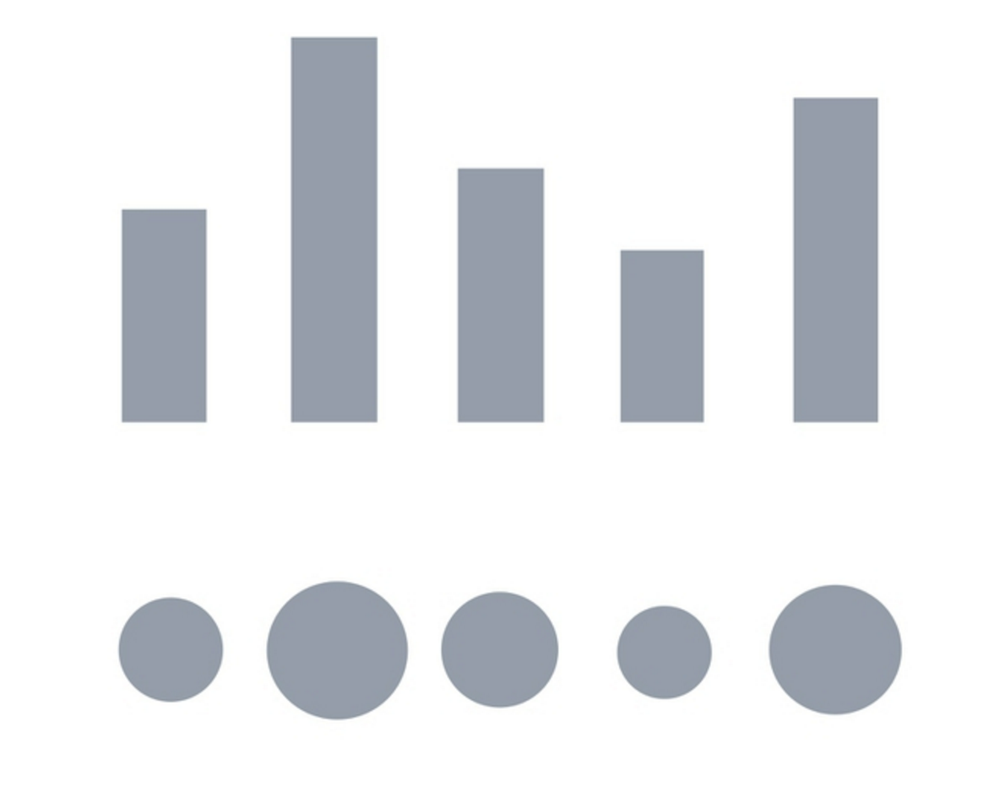
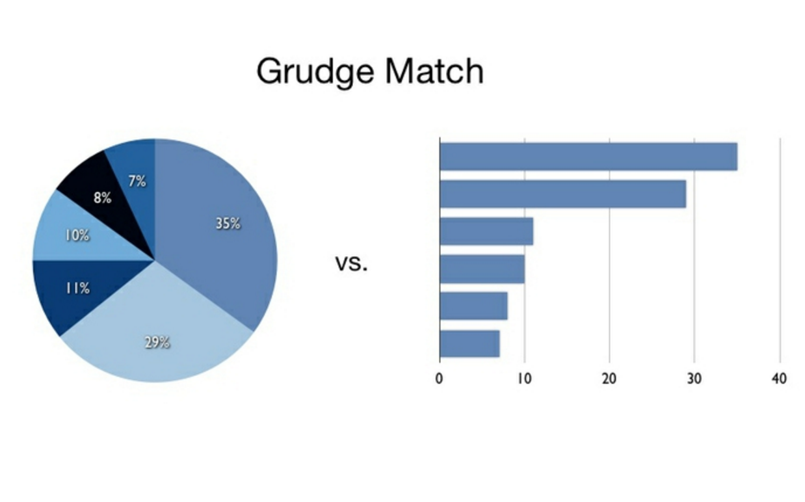
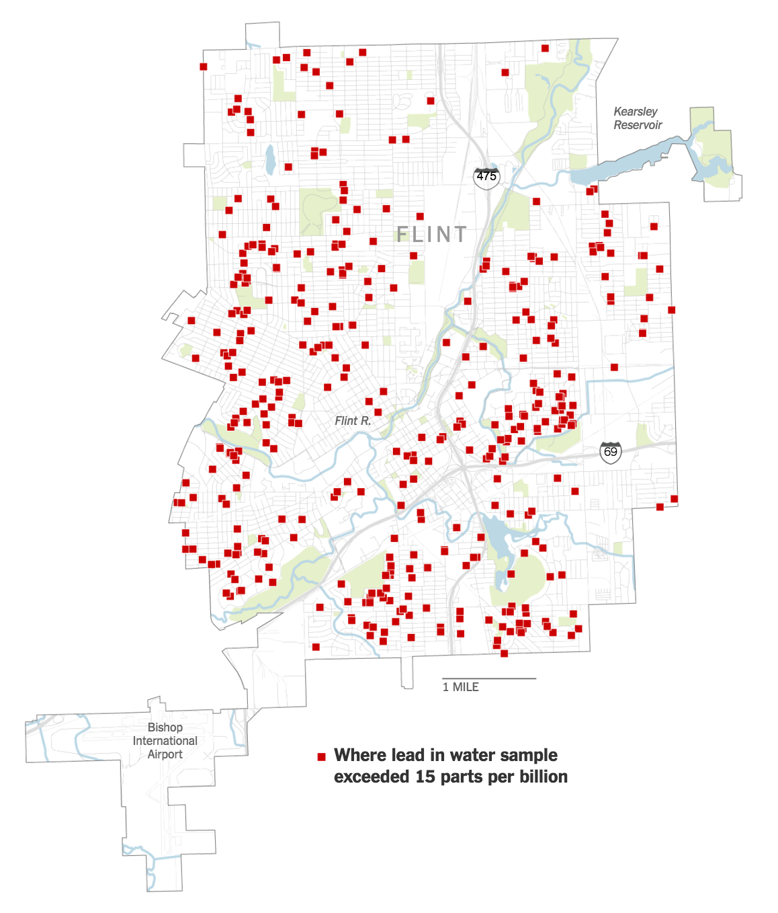

數據新聞與資料視覺化
林辰峰 Jeremy C.F. Lin
我是誰？

什麼是資料視覺化

哪個是資料視覺化

利用視覺元素編碼
不過視覺元素也有不同的精準度
不相信我？

哪個比較清楚？
Area VS line (aligned)
哪個比較清楚？
Area, angle, color intensity VS line (aligned)
如何用視覺呈現數據
首先，先想想你到底想要呈現什麼？
對比
長條圖很適合用來做簡單的比較，此外，在這個圖內設計者還加上顏色來強調誰領了最多錢
對比
長條圖雖然很好用，但是還是有要注意的地方
對比: 經過時間
基本上來說，如果數據因為時間而變動的都很適合用線圖
對比: 經過時間
當你想要呈現多組系列時，線圖通常比長條圖好
對比: 經過時間
尤其當你想要呈現多群組時，線圖真的還不賴
對比: 經過時間
設計得好，線圖也可以長得很sexy
對比: 經過時間
設計得差，線圖也可以長得很糟糕
小圖對比, 並經過時間
當你想要一次比較很多種東西時, 小圖對比是一個好選擇
組成：什麼的一部分
組成：什麼的一部分
組成：經過時間
相連性: 相連性關係圖
位置
位置: Choropleth

位置: Choropleth
好處:
- 展示統計標準化後的每個位置的不同處
常犯錯誤:
位置: Choropleth

位置: Proportional circles
位置: Proportional circles
好處:
- 精準地展示數據範圍
- 不用做統計標準化，直接用原始數據即可
常犯錯誤:
位置: 熱圖
位置: Proportional circles
好處:
- Showing concentrations
- Emphasizing the data, when data doesn't match existing boundaries
常犯錯誤:
Location: Dot maps
Location: Dot maps
Good for:
- Showing density and distribution
- Geography that can not be easily grouped
- Showing single incidents or events
- If exact coordinates are important to your map
Common mistakes:
Maps don't have to be maps
Interactions

Interactions
- If you make the reader click or do anything other than scroll, something spectacular has to happen
- If you make a tooltip or rollover, assume no one will ever see it. If content is important for readers to see, don't hide it
- When deciding whether to make something interactive, remember that getting it to work on all platforms is expensive
Annotations
- If you make the reader click or do anything other than scroll, something spectacular has to happen
- If you make a tooltip or rollover, assume no one will ever see it. If content is important for readers to see, don't hide it
- When deciding whether to make something interactive, remember that getting it to work on all platforms is expensive